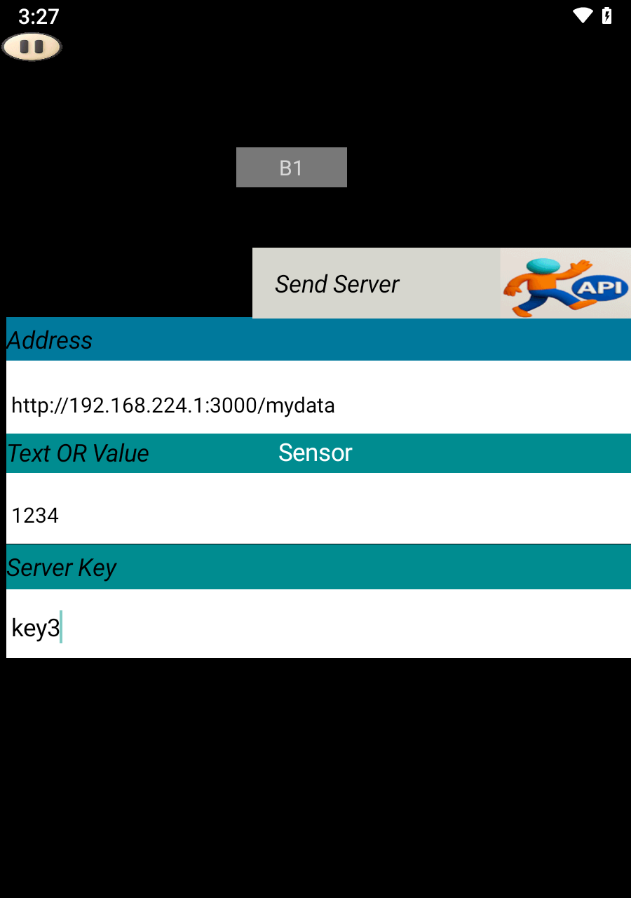
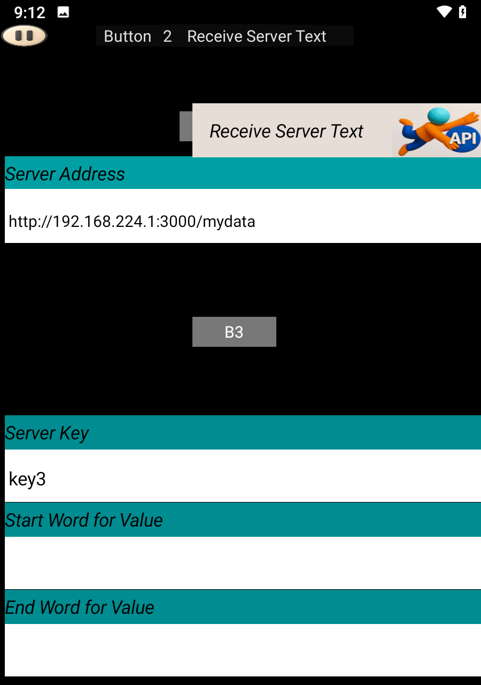
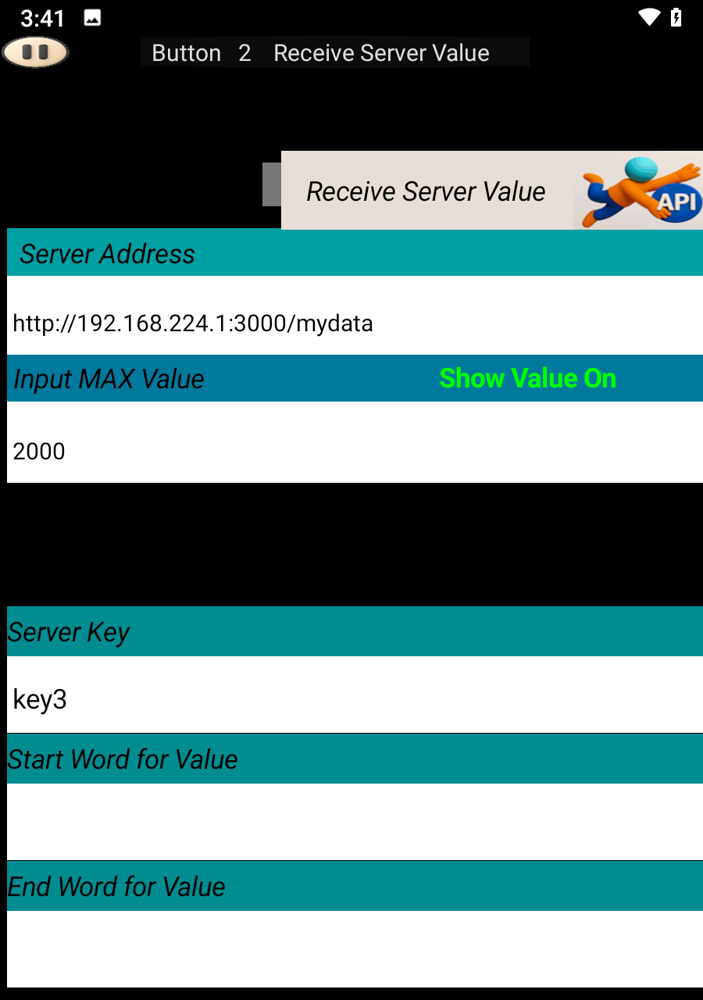

Download the following ZIP file and extract it:
After extraction, click on Start server.bat to launch the Local server on your computer.
If successful, you will see a message like this:
{"level":30,"time":1761753122527,"pid":9856,"hostname":"ssm","msg":"Server listening at http://192.168.224.1:3000"}
Open SoifGo and create a button. Set its behavior to Send Server.
In play mode, clicking this button will send the value 1234 to the server.
You can verify the result by visiting the following address in your browser:
http://192.168.224.1:3000/mydata
{"key3":"1234"}✅ Upload successful.

Create another button and set its behavior to Receive Server Text.
If your server response includes extra characters, you can use the Start Filter and End Filter fields to extract the desired part.
If no filtering is needed, leave those fields empty.

If you want to trigger visual effects based on received values, set the button behavior to Receive Server Value and specify the Maximum Value.
Once configured, effects will appear in the menu.
To learn more about applying effects to buttons, visit the following link: